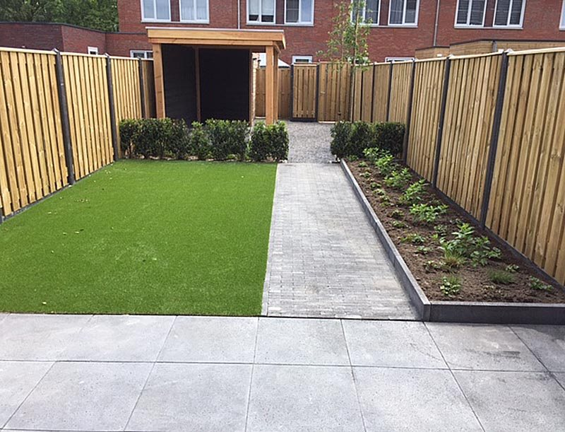
Tuinontwerp
Een eigen ontwerp dat past bij de plek, de architectuur van uw woning en uw wensen.
Schets gratis bij akkoordMeer info
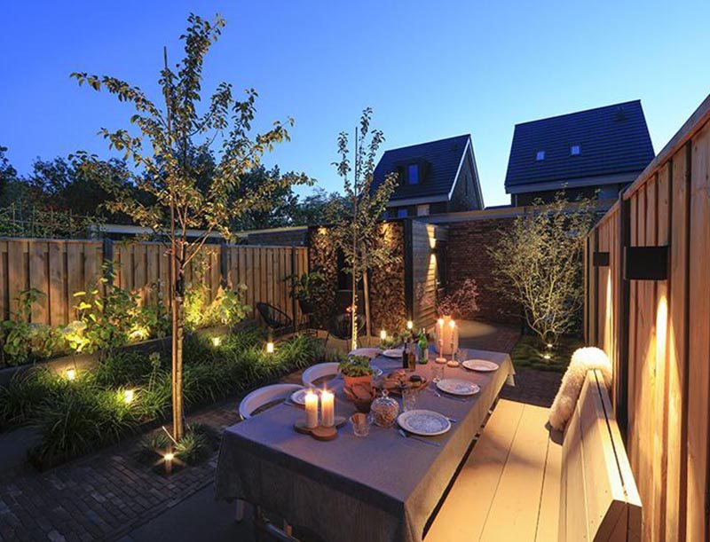
Ontwerp, aanleg en onderhoud van tuinen vanuit Zevenbergen. Strakke lijnen, duurzaam hout en sfeervolle verlichting, afgestemd op uw huis en uw wensen.
Van het eerste ontwerp tot het onderhoud daarna. Klik op een dienst voor meer informatie.

Een eigen ontwerp dat past bij de plek, de architectuur van uw woning en uw wensen.
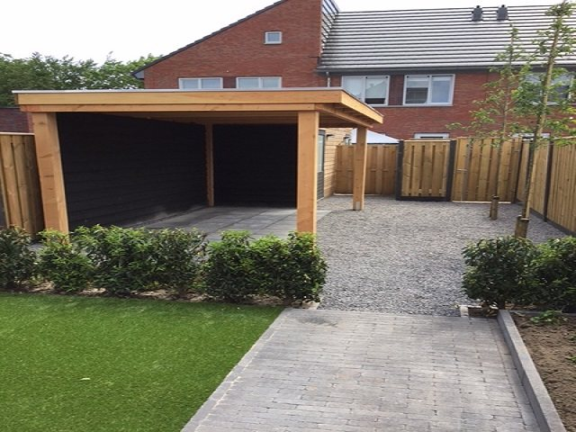
Zodra uw wensen concreet zijn, leggen we de tuin aan. We ontzorgen u van A tot Z.
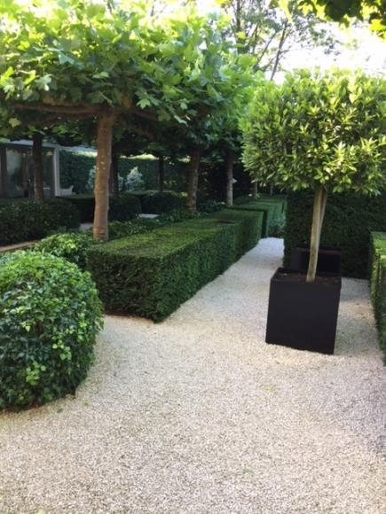
Uw tuin in topconditie, in de juiste maanden. Groenafval voeren we netjes af.
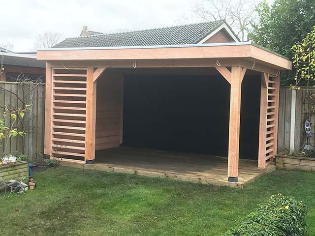
Overkappingen, schuurtjes, vlonders, schuttingen en pergola's van douglas hout.
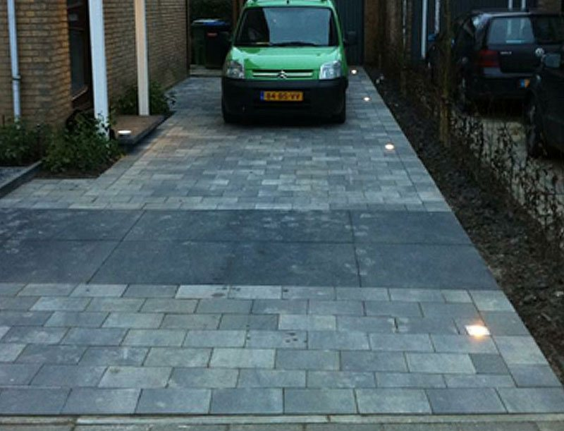
Opritten, terrassen en paden die over 8 jaar nog net zo strak liggen.
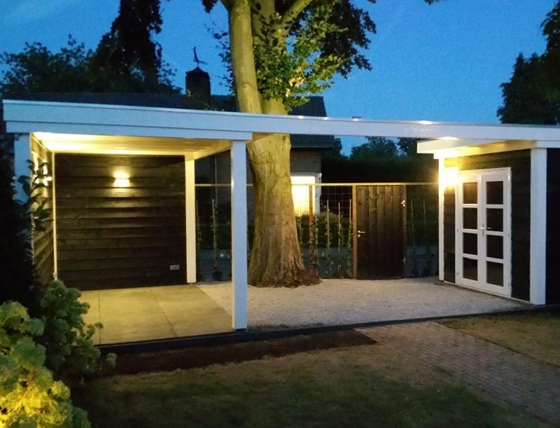
Een verlichtingsplan met In-Lite LED, door ons aangesloten en gemonteerd.
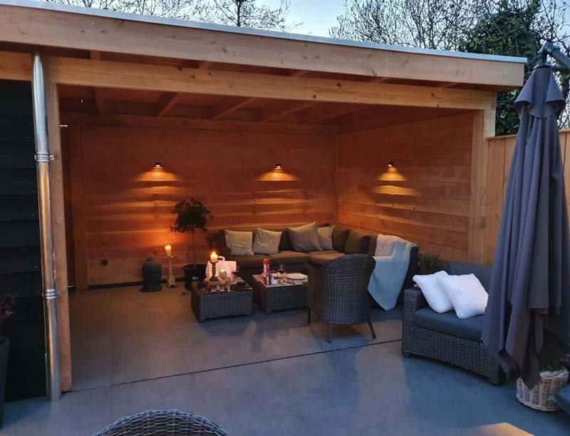
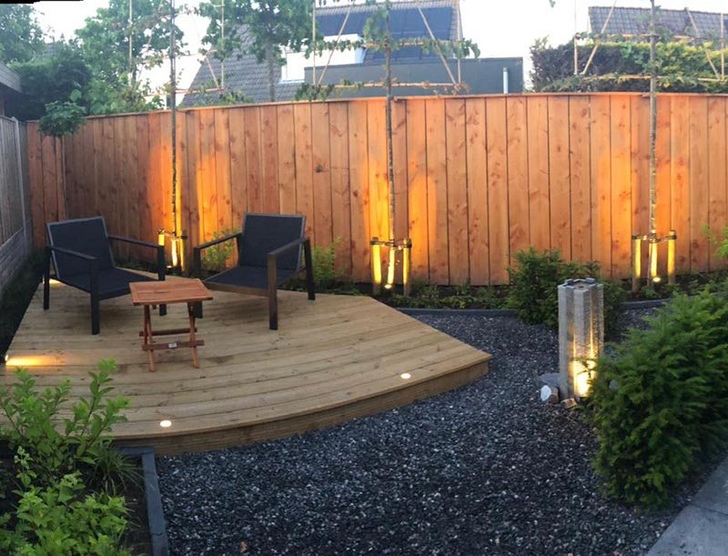
We werken in één eigen stijl en proberen die bij elke klant te verwezenlijken. Robuust houtwerk van douglas, degelijke bestrating en verlichting die we zelf aansluiten. Zo krijgt u een tuin waar u ook 's avonds van geniet.
Tuinen die we ontwierpen en aanlegden, onder meer in Zevenbergen, Etten-Leur, Breda, Prinsenbeek en Gilze.
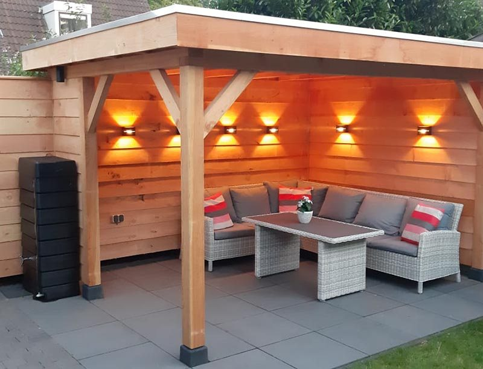
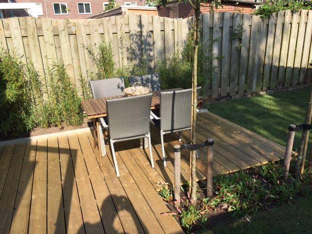
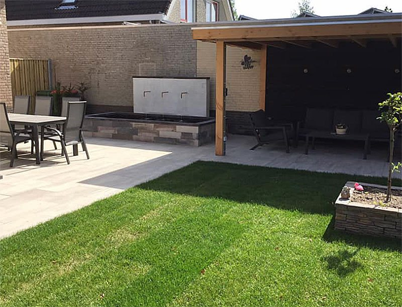
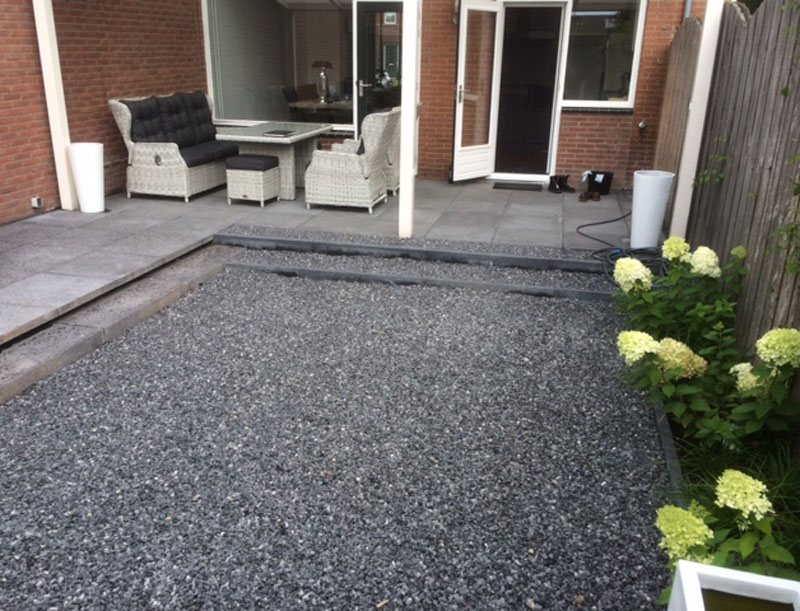
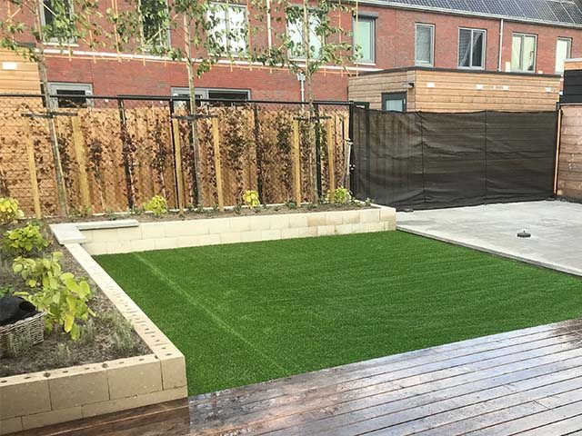
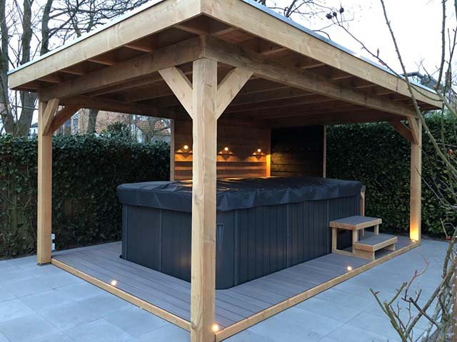
"Een Jaar geleden is Mink bij ons geweest om een ontwerp te maken voor onze achtertuin, Onze wens was een onderhouds arme, strakke tuin."
Frank & Caroline"Wij zijn zeer tevreden over onze Tuin. Alles word zeer correct nagekomen, zowel de offerte als de uitvoering."
Fam. van Wijk · stadstuin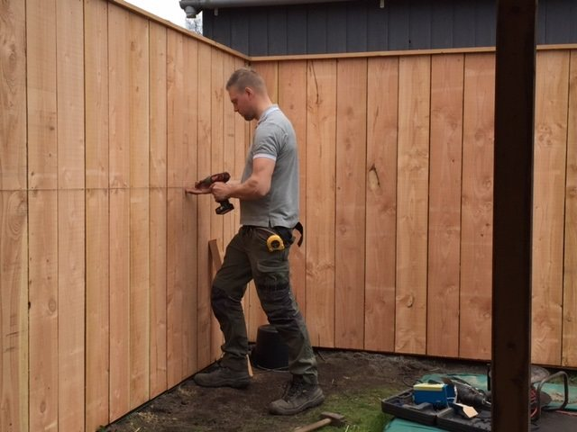
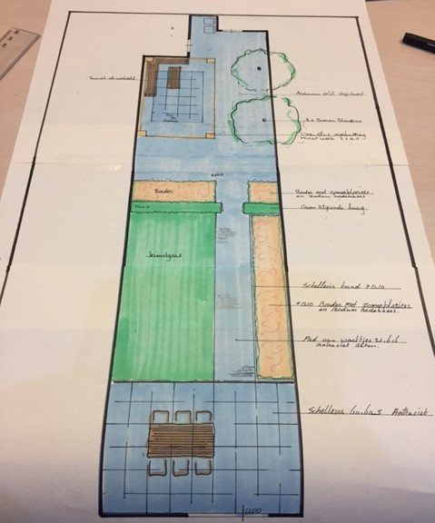
"Wij kijken er naar uit! Elk project is weer een nieuwe uitdaging!"Mink Diks, MD.Tuininspiratie
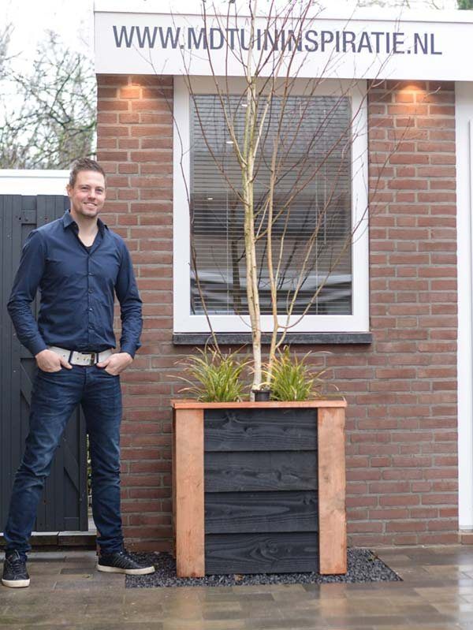
"Mijn kracht zit hem vooral in het luisteren en het tonen van goede voorbeelden."
MD.Tuininspiratie is een hoveniersbedrijf voor ontwerp, aanleg en onderhoud van tuinen. Het begint altijd met een kennismaking, want die vinden we erg belangrijk.
Loopt u met het idee om uw tuin te veranderen? Spreek ons gerust aan als onze bus in de straat staat, of kom een bakkie doen in de ontwerpstudio.
Vraag vrijblijvend een offerte aan en maak kennis met ons. Hoe beter u uw tuinwens omschrijft, hoe gerichter de prijs.
Tot 17.00 uur zijn we hard aan het werk. Vanaf 19.00 uur zijn we goed bereikbaar.